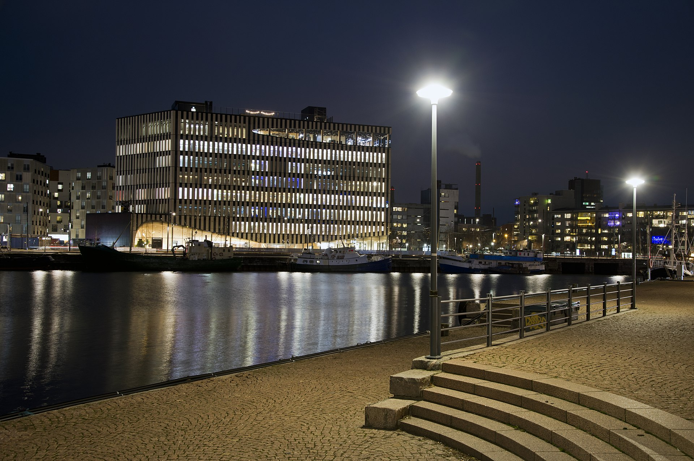

A Supercell, vagy Supercell Oy cég 2010. május 14-én jött létre két ember, Mikko Kodisoja és Ilkka Paananen vezetésével. A kettő úgy ismerte meg egymást, hogy ugyanabban a cégben (Sumea) dolgoztak 2000-től, Kodisoja mint kreatív igazgató, és Paananen mint vezérigazgató.
2010-ben mind a ketten elhagyták a céget, és még négy emberrel (Petri Styrman, Lassi Leppinen, Visa Forstén és Niko Derome), akiket munkai kapcsolatokban ismertek meg, ugyanabban az évben Espoo városában megalapították a Supercellt.

2011-ben a Supercell elhagyta a Gunshine.net-et több okból is:
A cég leküzdehetetlennek tartotta a Zynga piacvezető szerepét a Facebook platformon, ezért a mobil eszközök játékainak fejlesztésére kezdett fókuszálni.
A cég egyszerre 5 játékot fejlesztett. Az első publikus tesztelésre kiadott játék a Pets vs Orcs volt. Ennek, és a Tower nevű játéknak abbahagyták a fejlesztését.
Első nemzetközileg megjelent játékuk a Hay Day volt. Következő nagy projektjük a Clash of Clans lett.
A Supercell 2010 óta a legtöbbet érő cég dolgozónként, hiszen a dolgozók egyenként 32 millió dollárt érnek.
Bár mindössze 5 játékot adtak ki, minden megjelent játékhoz hozzá lehetne csatolni 9 „megölt” játékot.
A játékokat nem a vezetők „ölik meg”, hanem maga a fejlesztő csoport. Ebben rejlik a Supercell sikerének titka.
A cég fejlesztői 10–15 fős csoportokra, úgynevezett „cellákra” oszlanak. Innen ered a Supercell, vagyis Szuper-cella név.
Minden csoport szabadon dolgozhat azon, amin akar. Ha a csapat úgy érzi, hogy a játék nem elég jó, akkor saját maguk „megölik” a projektet.
„A legjobb csapatok alkotják a legjobb játékokat.”
– Supercell